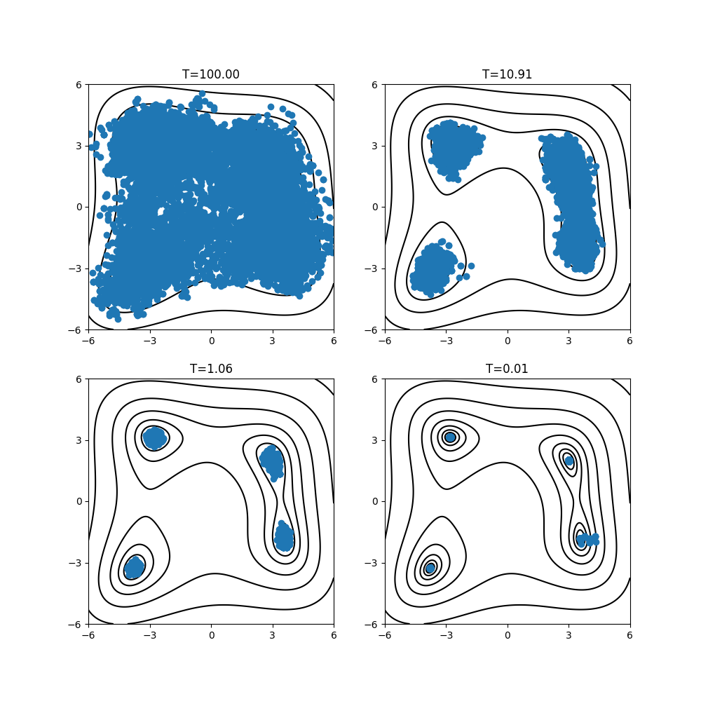

レプリカ交換モンテカルロ法による探索#
ここでは、レプリカ交換モンテカルロ法を用いて Himmelblau関数の最小化問題を解析する方法について説明します。
具体的な計算手順は minsearch の場合と同様です。
サンプルファイルの場所#
サンプルファイルは sample/analytical/exchange にあります。
フォルダには以下のファイルが格納されています。
input.tomlメインプログラムの入力ファイル
do.sh本チュートリアルを一括計算するために準備されたスクリプト
入力ファイルの説明#
メインプログラム用の入力ファイル input.toml について説明します。記述方法の詳細については「入力ファイル」の項を参照してください。
[base]
dimension = 2
output_dir = "output"
[solver]
name = "analytical"
function_name = "himmelblau"
[algorithm]
name = "exchange"
seed = 12345
[algorithm.param]
min_list = [-6.0, -6.0]
max_list = [6.0, 6.0]
step_list = [0.3, 0.3]
[algorithm.exchange]
Tmin = 0.01
Tmax = 100.0
numsteps = 10000
numsteps_exchange = 100
nreplica_per_proc = 20
ここではこの入力ファイルを簡単に説明します。 詳細は「入力ファイル」の章および レプリカ交換モンテカルロ法 exchange を参照してください。
[base], [solver] のセクションについては Nelder-Mead法による探索(minsearch)の場合と同じです。
[algorithm] セクションでは、使用するアルゴリズムとその設定を行います。
nameは使用するアルゴリズムの名前です。このチュートリアルではレプリカ交換モンテカルロ法による解析を行うので、exchangeを指定します。
[algorithm.param] セクションでは、探索する連続なパラメータ空間の設定を行います。
min_listとmax_listはそれぞれ探索範囲の最小値と最大値を指定します。step_listはモンテカルロ更新の際の変化幅(ガウス分布の標準偏差)です。
[algorithm.exchange] サブセクションは、レプリカ交換モンテカルロ法のハイパーパラメータを指定します。
numstepsはモンテカルロ更新の回数です。numsteps_exchangeで指定した回数のモンテカルロ更新の後に、温度交換を試みます。Tmin,Tmaxはそれぞれ温度の下限・上限です。Tlogspaceがtrueの場合、温度を対数空間で等分割します（省略時のデフォルト値はtrueです）。nreplica_per_procは 1つのMPIプロセスが受け持つレプリカの数を指定します。
計算の実行#
最初にサンプルファイルが置いてあるフォルダへ移動します。(以下、ODAT-SEパッケージをダウンロードしたディレクトリ直下にいることを仮定します。)
$ cd sample/analytical/exchange
メインプログラムを実行します。計算時間は通常のPCで数秒程度で終わります。
$ mpiexec -np 4 odatse input.toml | tee log.txt
ここではプロセス数4のMPI並列を用いた計算を行っています。
Open MPI を用いる場合で、使えるコア数よりも要求プロセス数の方が多い時には、 mpiexec コマンドに --oversubscribe オプションを追加してください。
実行すると、 output ディレクトリの下に各ランクのフォルダが作成され、各モンテカルロステップで評価したパラメータおよび目的関数の値を記した trial.txt ファイルと、実際に採択されたパラメータを記した result.txt ファイルが作成されます。
ともに書式は同じで、最初の2列がステップ数とプロセス内のwalker 番号、3列目が温度、4列目が目的関数の値、5列目以降がパラメータです。
# step walker T fx x1 x2
0 0 0.01 187.94429125133564 5.155393113805774 -2.203493345018569
0 1 0.01123654800138751 3.179380982615041 -3.7929742598748666 -3.5452766573635235
0 2 0.012626001098748564 108.25464277273859 0.8127003489802398 1.1465364357510186
0 3 0.014187266741165962 483.84183395038843 5.57417423682746 1.8381251624588506
0 4 0.01594159037455999 0.43633134370869153 2.9868796504069426 1.8428384502208246
0 5 0.01791284454622004 719.7992581349758 2.972577711255287 5.535680832873856
0 6 0.020127853758499396 452.4691017123836 -5.899340424701358 -4.722667479627368
0 7 0.022616759492228647 45.5355817998709 -2.4155554347674215 1.8769341969872393
0 8 0.025413430367026365 330.7972369561986 3.717750630491217 4.466110964691396
0 9 0.028555923019901074 552.0479484091458 5.575771168463163 2.684224163039442
0 10 0.032086999973704504 32.20027165958588 1.7097039347500953 2.609443449748964
...
best_result.txt に、目的関数が最小となったパラメータとそれを得たランク、モンテカルロステップの情報が書き込まれます。
nprocs = 80
rank = 2
step = 1632
walker = 9
fx = 3.618846176852812e-06
x1 = -2.8054241034292455
x2 = 3.13143739585623
1行目の nprocs は総レプリカ数（MPI プロセス数 × nreplica_per_proc。この例では 4 × 20 = 80）を表します。
なお、Himmelblau 関数には4つの大域的最小点があり、この実行ではそのうちの一つ \((-2.805, 3.131)\) 付近の解が得られています。
ODAT-SE の実装では1つのレプリカが様々な温度のサンプルを保持しています。各ランクフォルダにある result.txt には、各レプリカでサンプリングされたデータが記録されています。
この全レプリカの結果から温度ごとのサンプルに整列し直したデータが output/result_T%.txt に出力されます。(% は温度点のindex。)
1列目がステップ、2列目が全体での walker 番号(レプリカ番号)、3列目が目的関数の値、4列目以降がパラメータです。
# T = 0.014187266741165962
0 3 483.84183395038843 5.57417423682746 1.8381251624588506
1 3 376.63669411179063 5.315947017297935 2.006168750367261
2 3 376.63669411179063 5.315947017297935 2.006168750367261
3 3 376.63669411179063 5.315947017297935 2.006168750367261
4 3 376.63669411179063 5.315947017297935 2.006168750367261
5 3 254.81573883689714 5.04750307814821 1.483720563950596
...
計算結果の可視化#
result_T%.txt を図示することで f(x) の小さいパラメータがどこにあるかを推定することができます。
以下のコマンドを入力すると 2次元パラメータ空間の図 res_T%.png が作成されます。
$ python3 ../plot_himmel.py --xcol=3 --ycol=4 --skip=20 --format="o" --output=output/res_T0.png output/result_T0.txt
作成された図を見ると、 f(x) の最小値を与える点の付近にサンプルが集中していることが分かります。温度Tのインデックスを変えると、高温ではサンプリング点が領域内に広く分布していること、温度を下げると極小点付近に集中することが見てとれます。

2次元パラメータ空間上のモンテカルロ法によるサンプリング点の分布。 \(T=\{35.02, 3.40, 0.33, 0.01\}\) の場合。#
参考
モンテカルロ法のログファイルを温度点ごとに分割する odatse_separateT をはじめ、
計算結果を解析するためのポスト処理ツールが用意されています。詳細は ポスト処理ツール を参照してください。